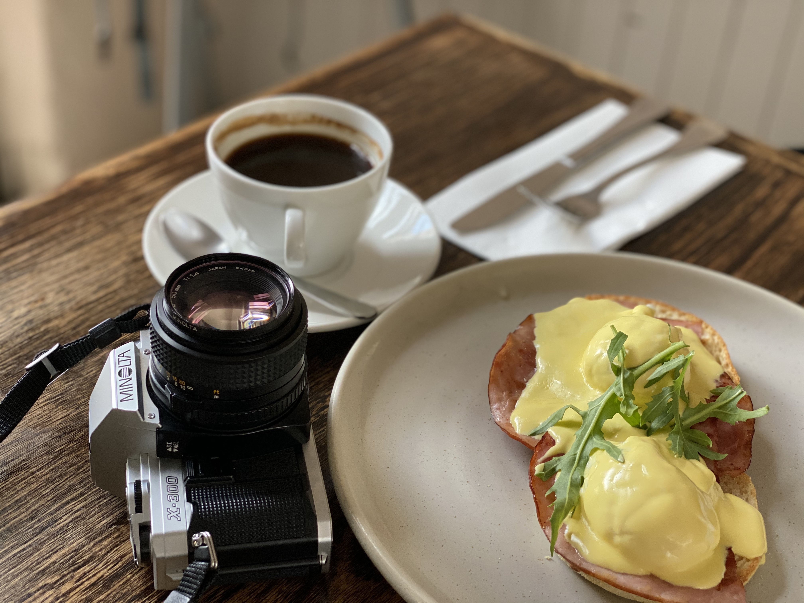

The best immersive experiences don't feel designed — they feel discovered.

I'm Christine, a VR Prototyper and Experience Designer based in Miami.
My work is driven by one goal: making the boundary between the real world and the experience disappear. Whether it's a controller-free XR installation, a motion-simulated VR ride, or a 1:1 scale theme park environment, I design for seamlessness — the moment you stop thinking about the technology and just exist inside the world.
I'm a 3D artist at heart — I build, texture, and light my own environments in Unreal and Unity, taking a prototype from rough concept to visually polished experience. My background in psychology shapes the rest: how people perceive space, where their attention goes, what breaks presence. I run playtests early, iterate often, and collaborate closely with engineers to bring ideas to life. If you notice the interface, the immersion is already broken.

When I'm not prototyping, I'm usually behind a camera. I shoot travel, street, and food photography — it's how I slow down and pay attention to things. I bake focaccia I'm honestly proud of, cook dishes that are probably too ambitious for a weeknight, and a bag of fresh beans is the fastest way to make my day.





Want to work together?
I'm always open to exciting projects and new collaborations.